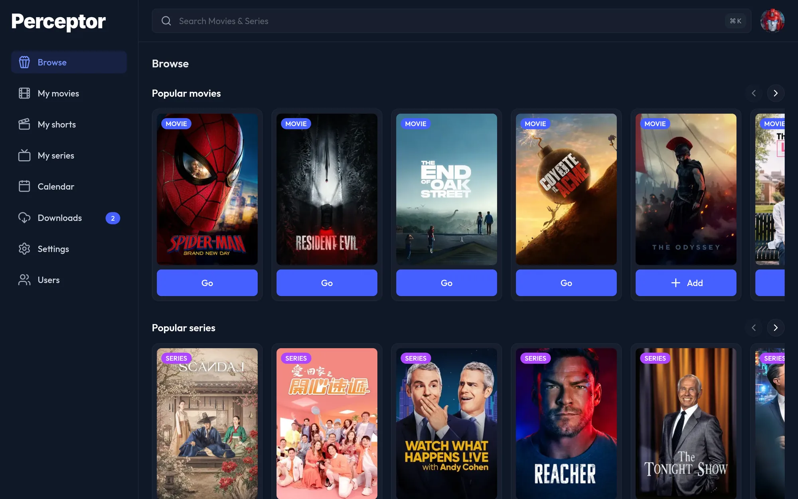
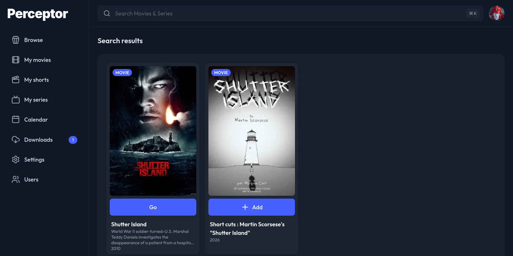
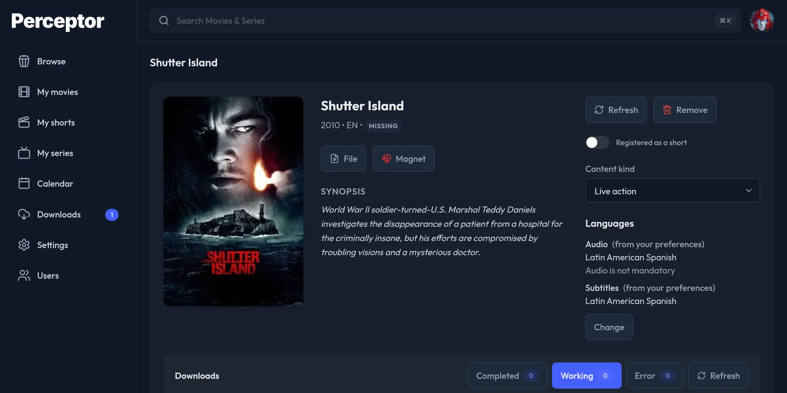
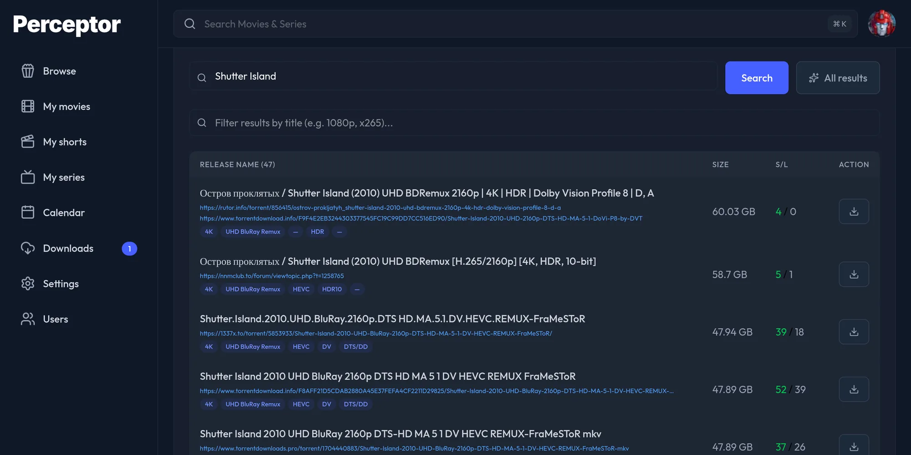
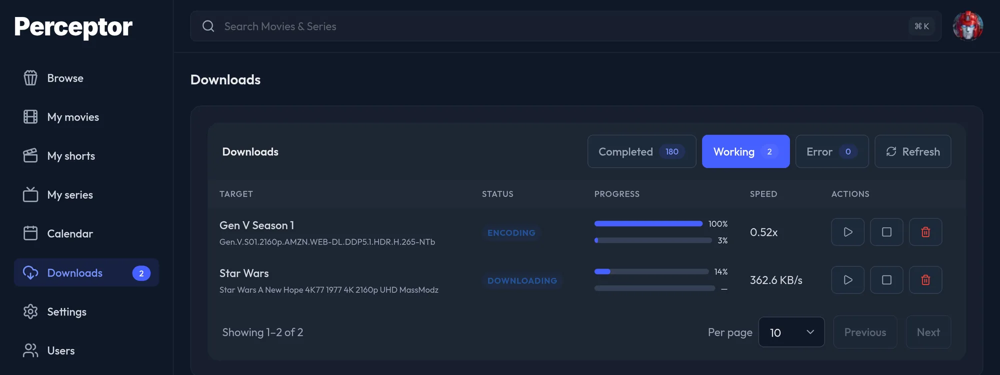
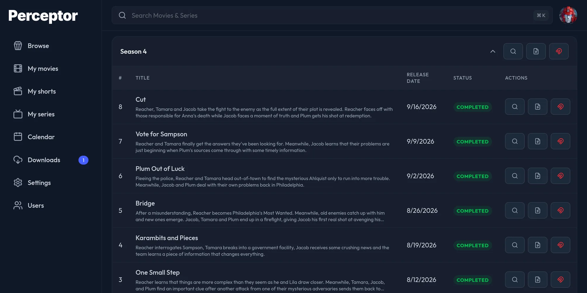
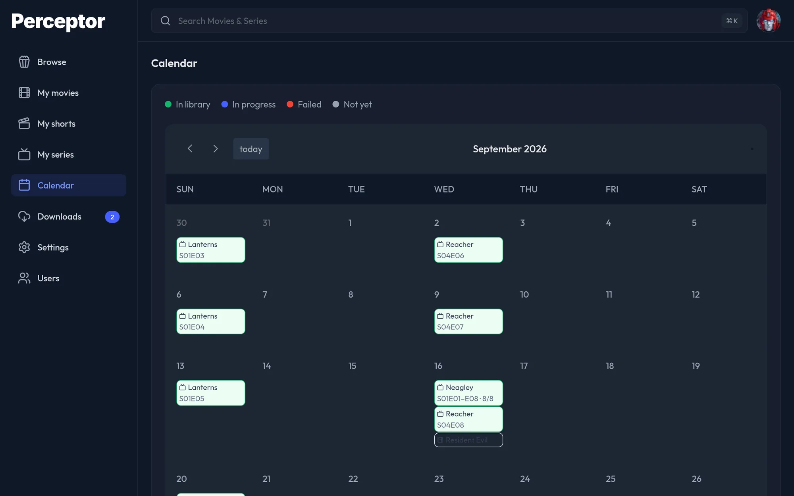

Perceptor finds it, downloads it, shrinks it and files it away — already playable on the TV, the phone and the old laptop. You do the typing. It does the rest.
Closed alpha · the feature set is frozen while it's stabilised

Why it exists
One app to track it, one to search, one to download, one to rename — and then a 60 GB file with eleven audio tracks your TV refuses to play. Perceptor is that whole path as a single thing.
Films and series in the same list. Pick it, and nothing else needs your attention until it's ready.
Every user gets their own films and series. Nobody else's clutter shows up in your home screen.
The transcode isn't a bonus feature bolted onto a downloader. It's the entire point.
The part nobody else does
Perceptor re-encodes what it downloads to AV1 — keeping the languages you watch in, throwing away the ten you don't, and leaving HDR exactly as it was.
You pick the ceiling — 4K, 1080p, 720p, 480p or 360p. Nothing is ever upscaled, and you can turn the whole thing off if you'd rather keep the original.
Privacy
Streaming apps hand you a catalogue and keep the plumbing. You get an account you didn't want, a server you don't control, and a list of everything you watched sitting on somebody else's disk. Perceptor is software you run — there is no service behind it to sign up for.
There is nothing to register for, no login server, no password reset email from us. Your admin account exists on your machine and nowhere else.
No usage pings, no crash reporting, no third-party scripts. What you searched for and what you watched never leaves the machine you installed it on.
Perceptor asks TMDB for titles, posters and air dates with a key you create yourself — that's the whole outbound list. Your indexers, your downloader and your media server are all things you already run.
Each account has its own library. What someone else added isn't on your home screen, in your search results or in your calendar — same install, separate shelves.
Being honest about the limit: Perceptor is not a VPN and doesn't pretend to be one. Your downloader talks to peers the way it always did — if that matters where you live, put it behind the VPN you already trust.
How it works
Type it in the header from any screen. Films and series come back together — no deciding first which one you meant.
Your indexers, ranked with the best candidates on top. Or paste a magnet. Or upload the file you already have.
It downloads, re-encodes, renames, files it in your library and tells your media server. You get a notification-free, finished title.





A series arrives with its seasons and episodes. Season packs split into episodes by themselves. A title you already own isn't downloaded twice.
What you get
Registering a title checks your media server first. If your media server already has it — or half the episodes — they come in as done.
Wrong cut, broken encode, missing language? Point a new source at it and the new one takes over. Failed downloads resume where they broke.
Set them once for the whole install, tweak them for your account, add one more for a single title. Audio and subtitles are chosen separately — original audio with your subtitles is a normal thing to ask for. Every title's page tells you which ones will actually be used, and which it inherited from you.
Turn on the daily sweeps and newly aired episodes are picked up on their own. For films, choose which window you want — cinema, digital or physical release — and a quality floor keeps the poor rips out.
A month grid of films and episodes, grouped per series, coloured by what's already in your library and what isn't.
Queued, downloading, encoding, done — the same words everywhere, with live speed from the downloader and the encoder. Two screens never disagree.
Air dates, episode titles and release dates are re-read on their own, so a series that comes back after three years brings its new season with it.
Every screen was gone over on a phone: nothing scrolls sideways, nothing is too small to read, and nothing is too small to tap. Light or dark, whichever your phone is set to.
Removing a title, deleting a source, cleaning up a download — none of them touch the finished file. That rule is written into the project's constitution.

Install
No Node, no clone, no compiling. Make a directory, run one line, answer five questions.
Download folder, library folder, admin user and password, domain — that's it. Ports, permissions, timezone and every secret are worked out for you.
Name the version, docker compose pull && up -d. The database is backed up and migrated on the way, every time.
Optional local certificate authority, issued once. Trust it on your devices and the padlock is real — no public domain needed.
First sign-in lands on a setup page that walks you through the two things the installer can't do for you: a TMDB key, and adding an indexer in Prowlarr.
Run the installer over a live install and it repairs what's missing. Titles, settings, users and passwords are left alone.
FAQ
It's a closed alpha, and honest about it. The whole pipeline runs end to end for films and series, and the feature set is now frozen — from here the work is making what exists solid, not adding to it. There's no stable release yet: the published images are release candidates, and its only user so far is the person who wrote it. If you like living slightly ahead of the curve, it works today.
Docker with the Compose plugin, somewhere to put files, and a TMDB API key (free — the app walks you through getting one). A CPU that can encode video is a good idea; everything runs on CPU, on every host, with no special setup.
It replaces the stack, not the philosophy. There are no quality profiles and no upgrade chasing — Perceptor normalizes everything to one output you can actually play, which is a different goal from keeping the best possible source file around.
qBittorrent and Prowlarr ship inside the stack — you don't install or configure them separately. TMDB provides the catalog, and Jellyfin or Plex gets told when something new lands. Everything else runs on your machine.
Titles you search for go to TMDB, because that's where the catalogue is — with an API key you created, not one shared by everyone. Release searches go to the indexers you configured. That's the complete list: there's no Perceptor server, no account, no telemetry and no analytics script on any screen. Your library, your history and your files stay on your hardware.
Yes. An admin creates the accounts — there's no public signup — and each person gets their own library, their own languages and their own interface language (English or Spanish). A title one person owns isn't visible to anyone else.
No. Removing a title, deleting a download or cleaning up a source never touches what's already in your library. It's one of the twelve rules the project can't break.
One folder, one command, and the next thing you want to watch just shows up.
Install PerceptorFree · self-hosted · no account, no tracking · source on GitHub